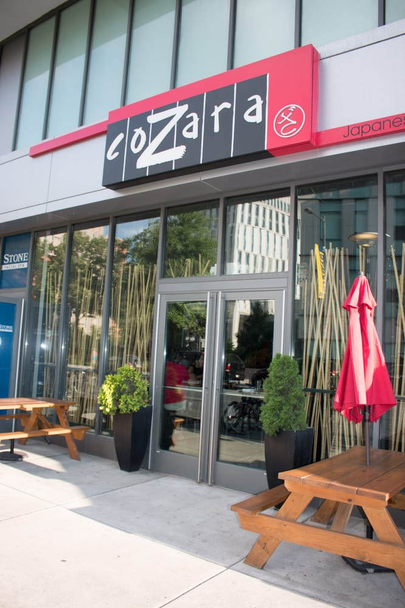
Visit us at 3200 Chestnut Street in University City, near UPenn and Drexel campuses.
Our cozy atmosphere invites you to relax and enjoy a meal that feels like home, while our diverse menu offers something for everyone. Whether you're craving a light lunch or a delicious dinner, CoZara is the place to be. Join us and discover your new favorite spot in town!
Don't just take our word for it,
One of my favorite sushi places in the area. Had wonderful, friendly service from Claudia, and Andrew is the consummate manager and host. Truly a great place.
Great Sushi. Reasonably priced, excellent service. Will be back!
Amazing as always! Andrew the manager and servers Crystal and Claudia were wonderful!! The food is always incredible.
This is my "go to" for really good Japanese food at a reasonable price. They have an extensive menu. It's a fun casual atmosphere with friendly service!
coZara has a great, balanced menu. There’s always something no matter what myself or my dinner companions are in the mood for. The truffled Brussel sprouts are amazing.
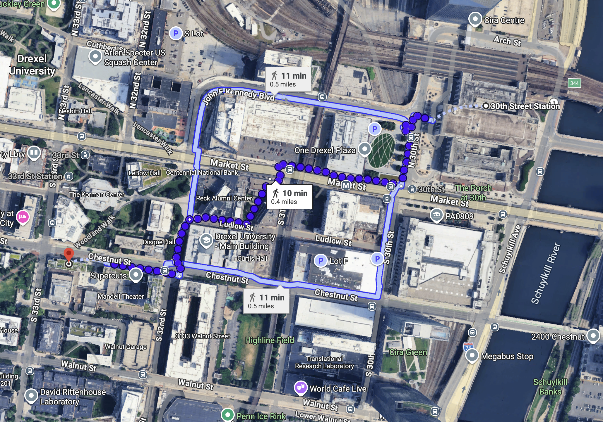
Menu
Items with red underlines can be clicked to view images
-
⦁ 3
Hand Formed Grilled Rice Ball, Teriyaki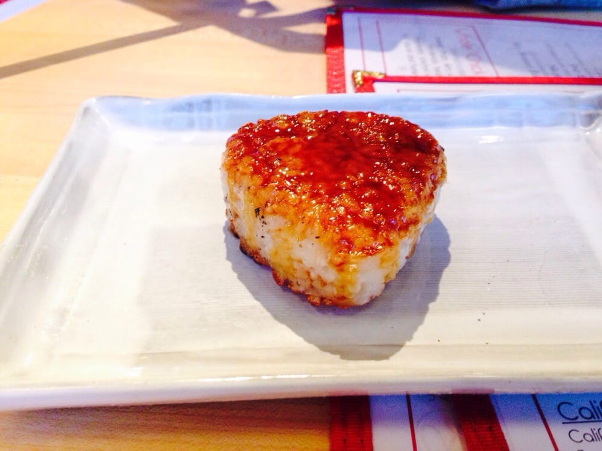
- Seaweek Salad ⦁ 6 with Octopus ⦁ 9
Tosazi Vinaigrette - Pork Gyoza ⦁ 6
Fried / Pan Seared / or Steamed; Chili Soy - Grilled Vegetable Medley ⦁ 5
Mixed Vegetables Served with Olive Oil, Lemon Maldon Salt - Truffle Brussel Sprouts ⦁ 10
Parmesan, Truffle Oil, Yuzu Salt -
⦁ 5
Kewpie Mayo, Furikaka, Katsuobushi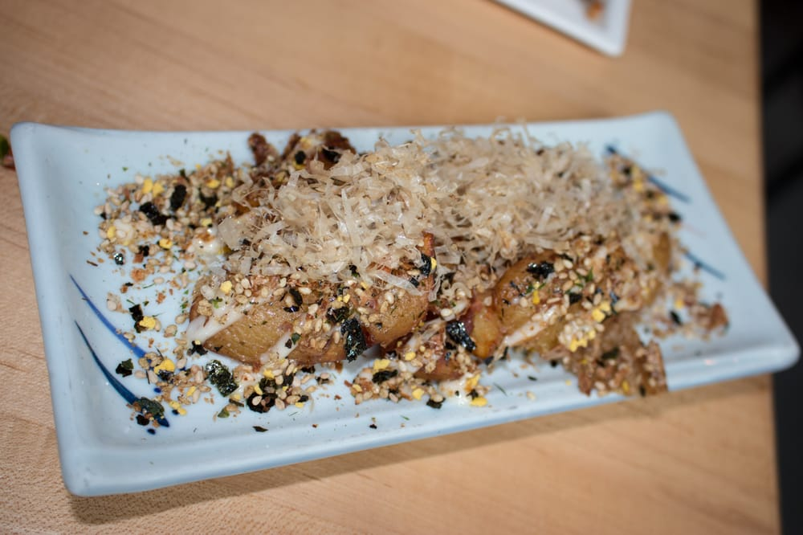
- Tempura Vegetables ⦁ 9 Add Shrimp ⦁ 15
Spicy Mayo, Dashi Soy -
⦁ 5
Dashi soy, Nameko Mushrooms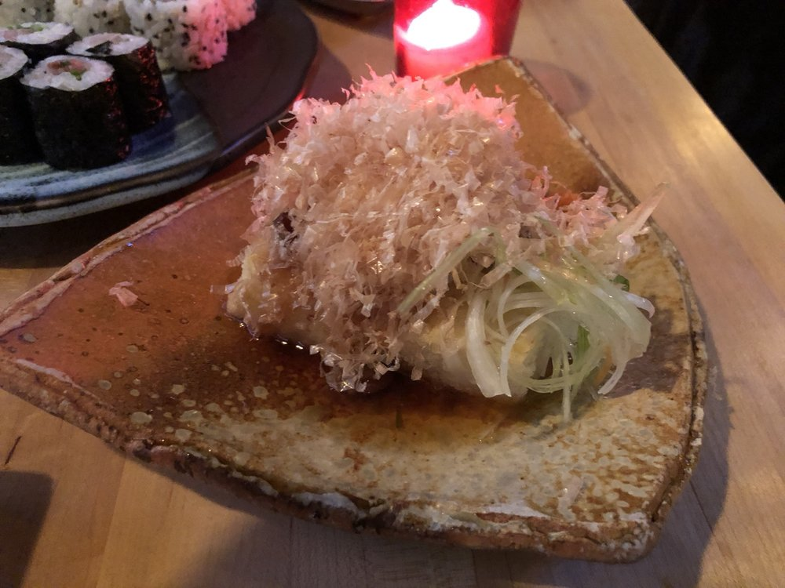
- Okonomiyaki ⦁ 5
Kewpie Mayo, Aonori, Otajoy Sauce - Edamame ⦁ 5
Soy Bean - Green Salad ⦁ 5 with Avocado ⦁ 7
Ginger Dressing - Sukiyaki Spring Rolls ⦁ 8
Shishito Pepper Aioli -
⦁ 7
Black Pepper & Honey Teriyaki, with Yuzu Soy Crème -
⦁ 5
"American/wit"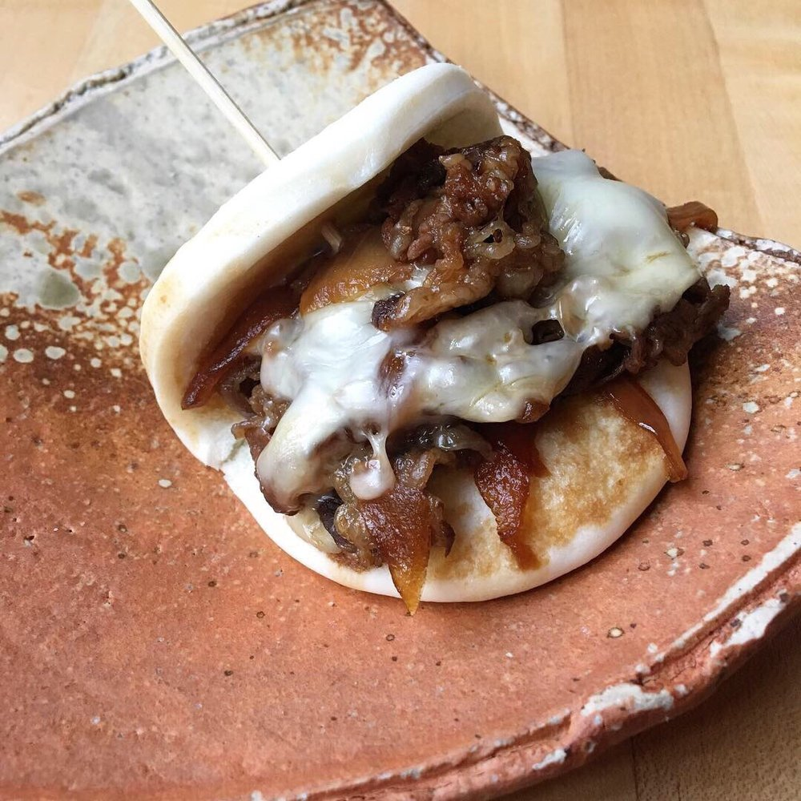
-
⦁ 4
Steamed Bun, Hoisin Katsu Sauce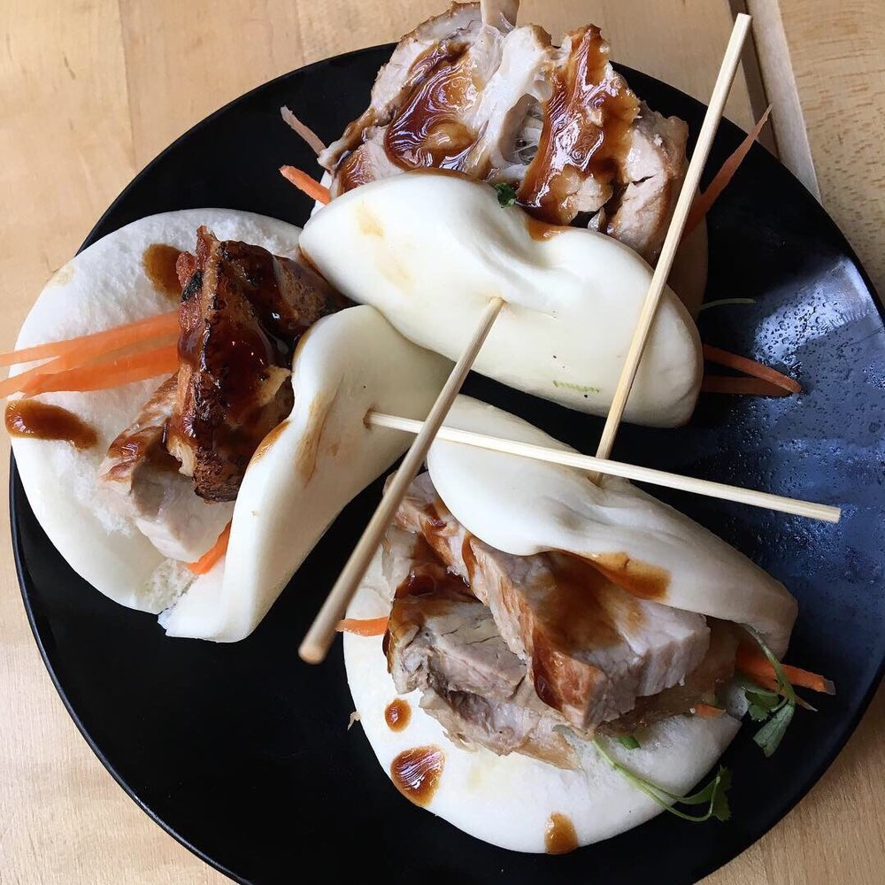
- Soft Shell Crab Bao Bun ⦁ 5
Japanese Tartar Sauce - Bao Bun Sampler ⦁ 12
-
⦁ 3.5
Tofu, Scallion, Seaweed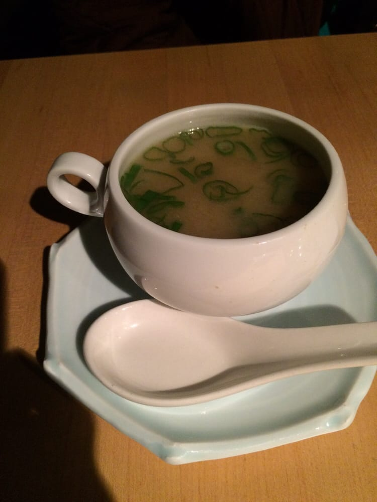
- Veggie Spring Rolls ⦁ 7
Thai Chili Sauce - Lump Crab Wonton ⦁ 9
Soy Pickled Jalapenos - Honey Roasted Sweet Potato ⦁ 4.5
Sweet Japanese Potatoes, Orange, Soy, Sesame - Shrimp Shumai ⦁ 3
- Takoyaki ⦁ 3
- Chicken Thigh ⦁ 2.75
- Chicken Breast ⦁ 2.75
- Pork Katsu ⦁ 3
- Panko Crusted Scallops ⦁ 3.75
- Filet Mignon ⦁ 4
- Yakitori Sampler ⦁ 18
- Salmon Teriyaki ⦁ 22
Fried Brussel Sprouds, Yakionigiri -
⦁ 19
Steamed Bok Choy, Yakionigiri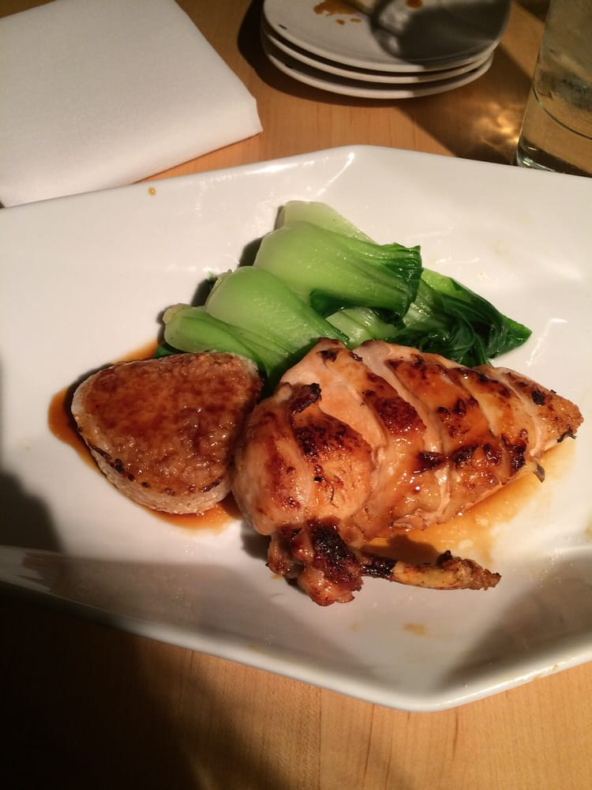
- Spicy Chirashi Bowl ⦁ 24
Tuna, Salmon, Yellowtail, Spicy Sushi Rice -
⦁ 17
Scallops, Shrimp, Soft Egg, Zanmai Broth - Japanese Curry Rice ⦁ 14
Traditional Japanese Curry, Carrots, Potato, Onion - Gyu Don ⦁ 14
Seasoned Beef over Rice
Add Fried Egg $1 - Chicken Shoyu Ramen ⦁ 14
Chicken Thighs, Garlic, Soft Egg
Make it Spicy $1 - Chicken Katsu Curry ⦁ 17
Japanese Curry with Chicken Katsu -
⦁ 18
Japanese Curry with Pork Katsu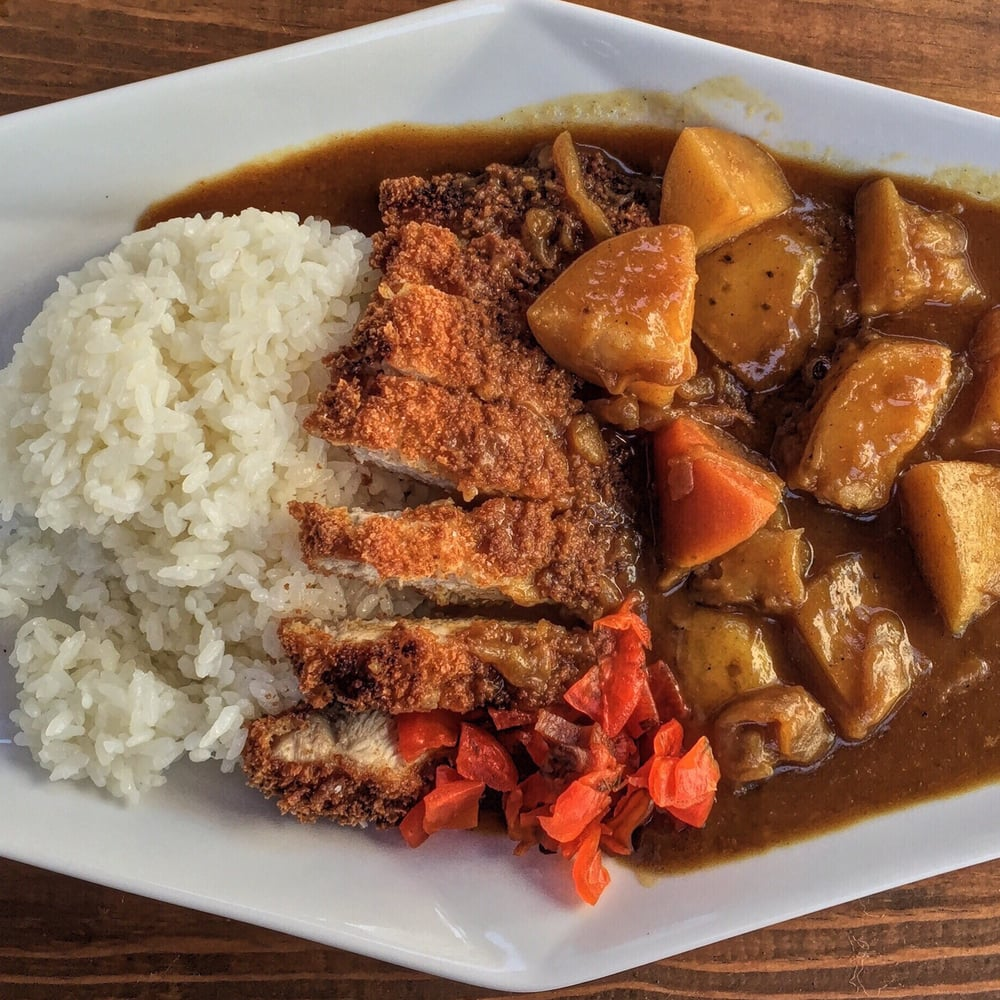
- Bacon Mushroom Mazeman ⦁ 12
Mushroom, Crispy Bacon, Truffle Crème, Parmesan - Fat Pig Ramen ⦁ 15
Pork Belly, Soft Egg, Black Garlic Oil, Tonkotsu Broth - Wasabi Shrimp Fried Rice ⦁ 13
Wasabi Furikake, Egg, Soy Sauce
- Hokkaido Scallop Roll ⦁ 14
Spicy Crunchy Scallop Maki Topped with Kani Salad, Uni Sauce, 6pc - Veggie Deluxe Roll ⦁ 9
Crispy Shallot, Asparagus, Carrot & Shiso Maki Wasabi Stem Dressing & Micro Greens Ginger Dressing, 6pc -
⦁ 14
Spicy Crunchy Tuna Jalapeno Maki Topped with Tempura Chilean Sea Bass in Sweet Spicy Sauce, 6pc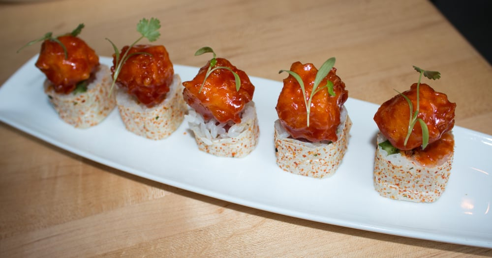
- Drexel Dragon Roll ⦁ 14
Avocado Cream Cheese Tempura Maki Topped with BBQ Ell & Cucumber & Truffle Eel Sauce, 6pc - Red Dragon Roll ⦁ 16
Spicy Tuna Avocado Maki Topped with Tuna, Crispy Shallots & Sweet Chili Eel Sauce, 6pc - Orange Dragon Roll ⦁ 15
Spicy Salmon & Avocado Maki Topped with Salmon Sashimi & Sesame Yuzu Sauce, 6pc
- Tuna Avocado ⦁ 5
- Eel Avocado ⦁ 4.5
- Salmon Avocado ⦁ 4.5
- California ⦁ 4.5
- Shrimp California ⦁ 4.5
- Yellowtail Scallion ⦁ 5
- Spicy Crunchy Tuna ⦁ 5.5
- Spicy Crunchy Salmon ⦁ 5
- Spicy Crunchy Shrimp ⦁ 5.5
- Spicy Yellowtail ⦁ 6
- Spider ⦁ 7
- Salmon and Fig ⦁ 5
- Philly ⦁ 4
-
⦁ 5.5
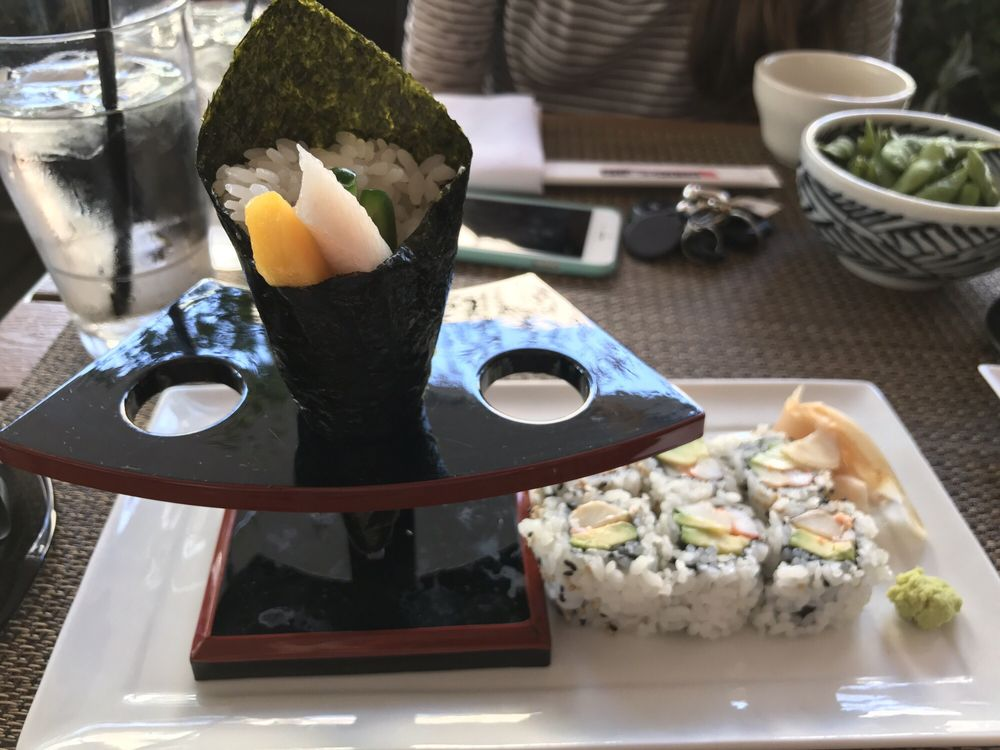
- Shrimp Tempura ⦁ 5
- Veggie ⦁ 4
- Avocado Cucumber ⦁ 4
| Shiitake ⦁ 5 | Tuna Avocado ⦁ 6 | Spicy Tuna ⦁ 5.5 | Shrimp Tempura ⦁ 7 |
| Ume Shiso ⦁ 5 | Eel Avocado ⦁ 5.5 | Spicy Salmon ⦁ 5 | Veggie Tempura ⦁ 6 |
| Oshinko ⦁ 5 | Salmon Avocado ⦁ 5.5 | Spicy Yellowtail ⦁ 6 | Spider ⦁ 9 |
| Avocado ⦁ 4 | Salmon Fig ⦁ 5.5 | Spicy Crunchy Tuna ⦁ 6 | Classic California ⦁ 5.5 |
| Cucumber ⦁ 4 | Yellowtail Scallion ⦁ 6 | Spicy Crunchy Salmon ⦁ 5.5 | Shrimp California ⦁ 5 |
| Veggie Futo ⦁ 6 | Yellowtail Jalapeno Mango ⦁ 7 | Spicy Crunchy Shrimp ⦁ 6 | Philly ⦁ 6 |
| Maki Combo ⦁ 16 Spicy Tuna, Yellowtail Jalapeno Mango, Salmon Avocado |
Sashimi Combo ⦁ 18 10 piece Chef's Selection |
Sushi Combo ⦁ 18 7 piece Chef's Selection With 1 Roll |
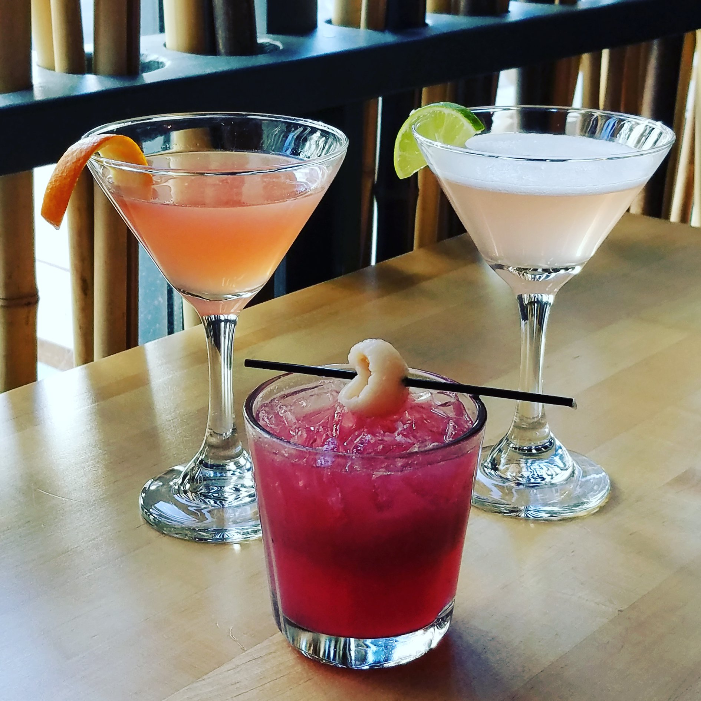
Cocktails$5
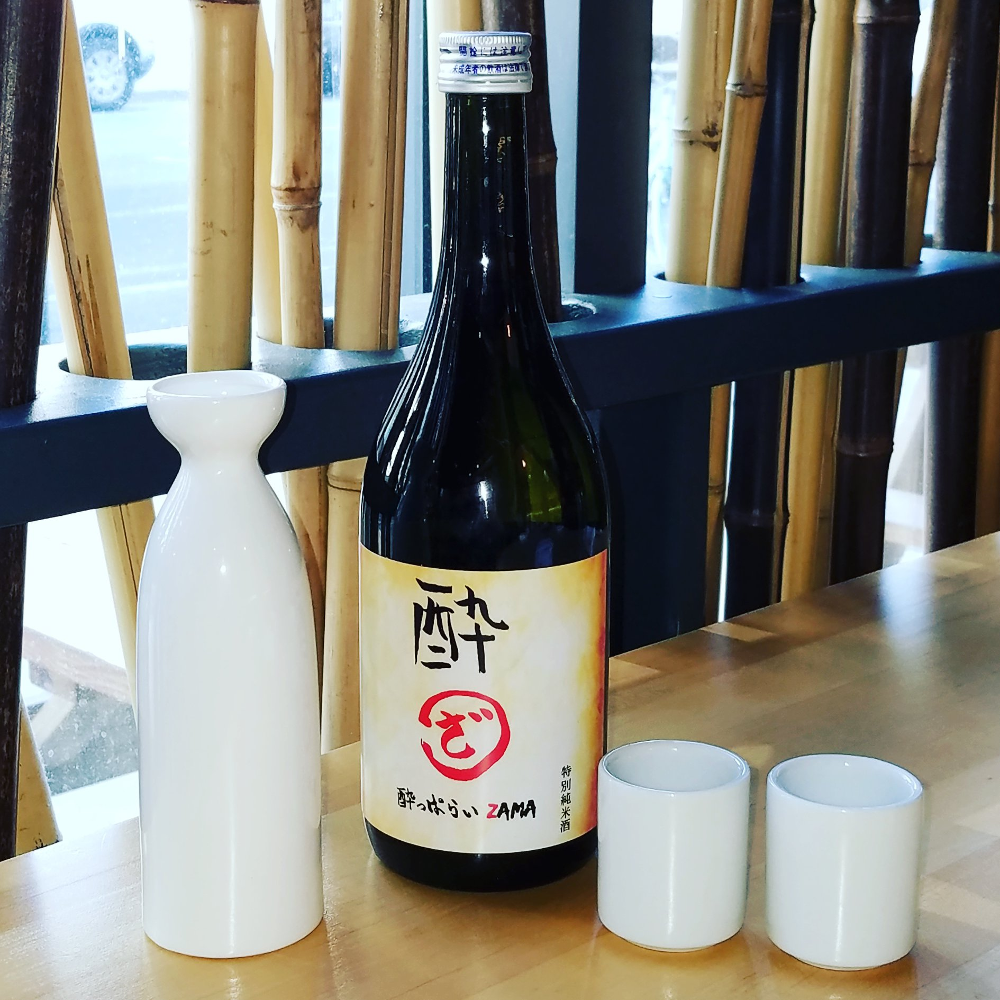
Shirayuki Sake$3
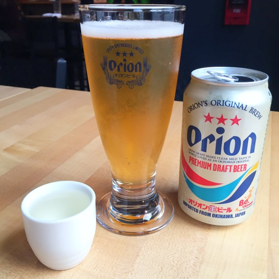
Japanese Beer$4
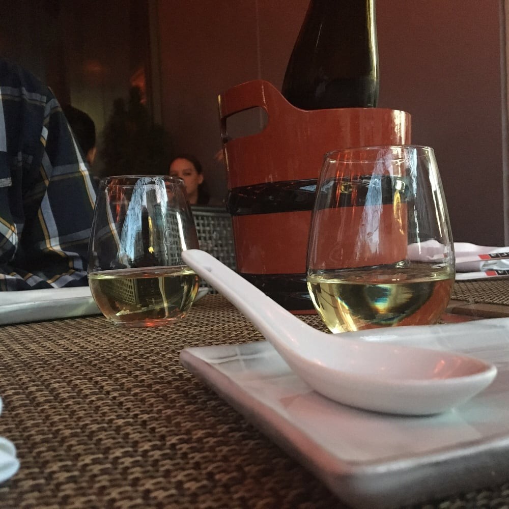
House Wine ⦁ Red or White$4
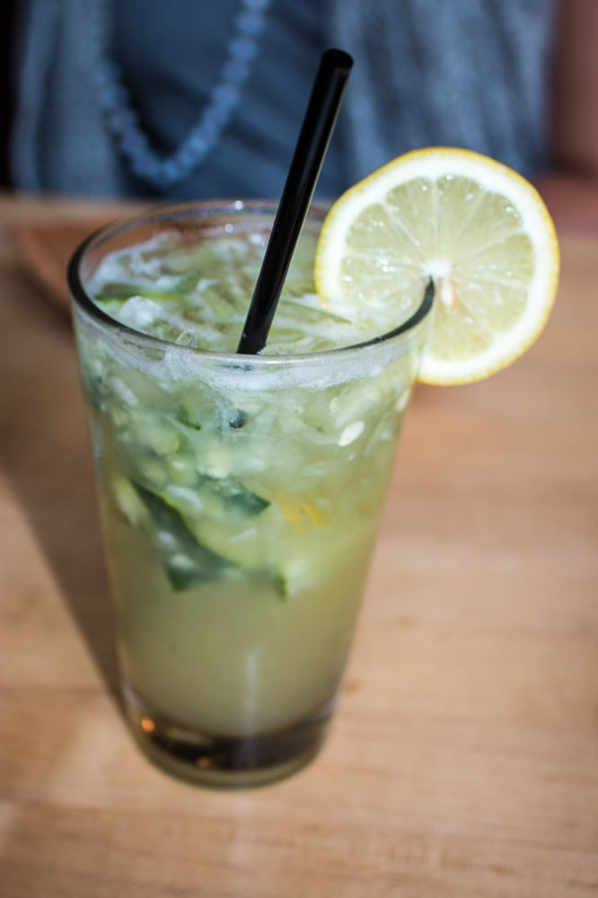
Cucumber Lemonade Cocktail$5
About CoZara
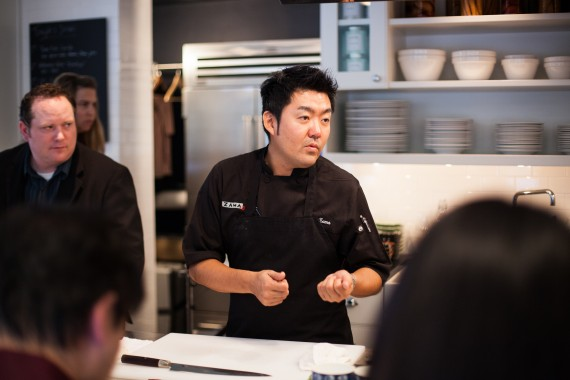
"Japanese food in the U.S. has to be updated," says Tanaka, who has done so much to upgrade the sushi scene with creative maki artistry at Zama, his restaurant hit near Rittenhouse Square.
There's much more to Japanese food than raw fish. Hiroyuki "Zama" Tanaka was determined to make that point at CoZara in University City. Along with sushi, Zama fired up the grill and deep-fryer to conjure some of his favorite homeland comforts for an izakaya-style gastropub.
CoZara excels in simple Japanese comforts done right - a griddled rice ball lacquered in teriyaki, a hearty braised beef and potato Niku Jaga stew, the thick chunks of velvety white salt-braised pork belly posed over dark ponzu. There is something so soul-satisfying about the purity of the ochazuke, a chunk of broiled salmon over rice that almost turned to congee when your server pours dashi broth from a teapot overtop.
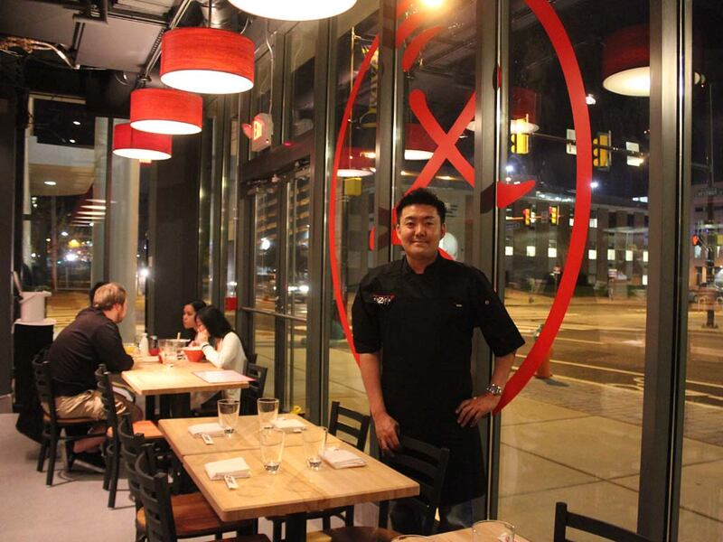
Chef Zama standing inside CoZara
Tanaka opened the 140-seat CoZara in April 2014 next to Zavino and Shake Shack in a commercial strip on Drexel University’s campus. There are many dining options on the two levels: the second-floor main dining room overlooking Chestnut Street, at the counter of the 10-seat open kitchen, at the nine-seat bar by the front door (stocked with Japanese beer and cocktails), and upstairs in a private room. A 30-seat outdoor terrace on the second floor is also an option in warm weather.
About Zama
Hiroyuki "Zama" Tanaka is a renowned chef and restaurateur known for his innovative approach to Japanese cuisine. Zama was born and raised in Kanagawa Japan, in 1971. He came to Philadelphia in 1991 to study English at Temple University through its campus in Japan. He needed a part-time job, and applied at Genji, then a popular Japanese restaurant on Sansom Street near Rittenhouse Square. Tanaka had kitchen experience back home, true — though it was frying burgers and baking pizza for American soldiers at Camp Zama, an Army base near his home in Kanagawa Prefecture. Tanaka climbed the ranks at Genji, heading its sushi and sake counter in the old Ritz-Carlton Hotel, before heading to Fish on Main in Manayunk. He rose through the Starr organization at Pod and Morimoto before opening Zama in 2009 at 128 S. 19th St. to stellar reviews. The Inquirer’s Craig LaBan called Zama “the best all-around Japanese restaurant to open since Morimoto.” Zama restaurant became a Philadelphia institution, frequented by multitudinous sushi lovers, sports celebrities, and Hollywood stars.
Zama was a venerable, self-taught sushi chef and a fixture in Philadelphia’s restaurant community. Many chefs working now carry with them the stamp of Zama’s generosity in sharing his expertise. Zama was known for his creativity and artistry in sushi making, and his restaurants were a beloved destination for sushi lovers in Philadelphia. Zama passed away in 2024, but his legacy lives on through the chefs he mentored and the impact he had on the Philadelphia restaurant scene.
Contact Us
We'd love to hear from you!
Reach out to us with any questions or feedback about your experience at CoZara.
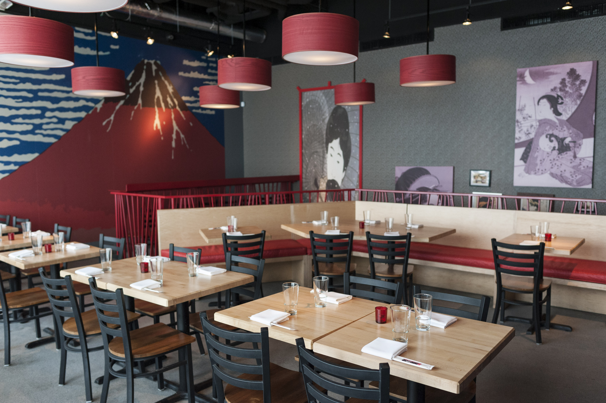
Host An Event Here
CoZara offers diners two floors with a wide variety of dining options including a 10-seat open kitchen, nine seat bar as well as the geisha room, an upstairs private room.
Designed by Boxwood Architects, the restaurant has a chic relaxed atmosphere with varying textures of gray, blonde wooden tables and black iron chairs. Red accents and hand painted images of Shoguns and Geisha serve as the only adornment. Modern red silk moire drum lighting fixtures cast a dim glow. Ceilings are exposed industrial black duct work.
A 30 seat outdoor terrace is also available in the summer months. Our private dining manager is happy to assist you with planning the details of your event.
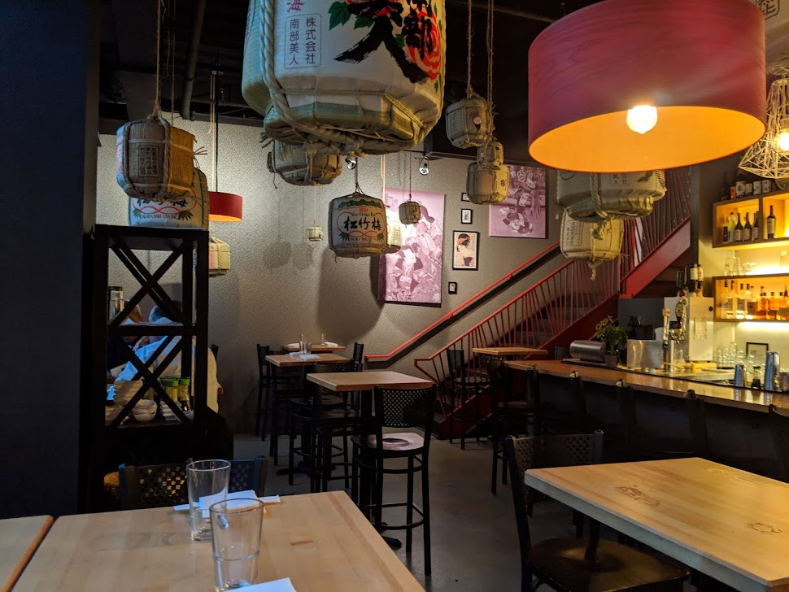
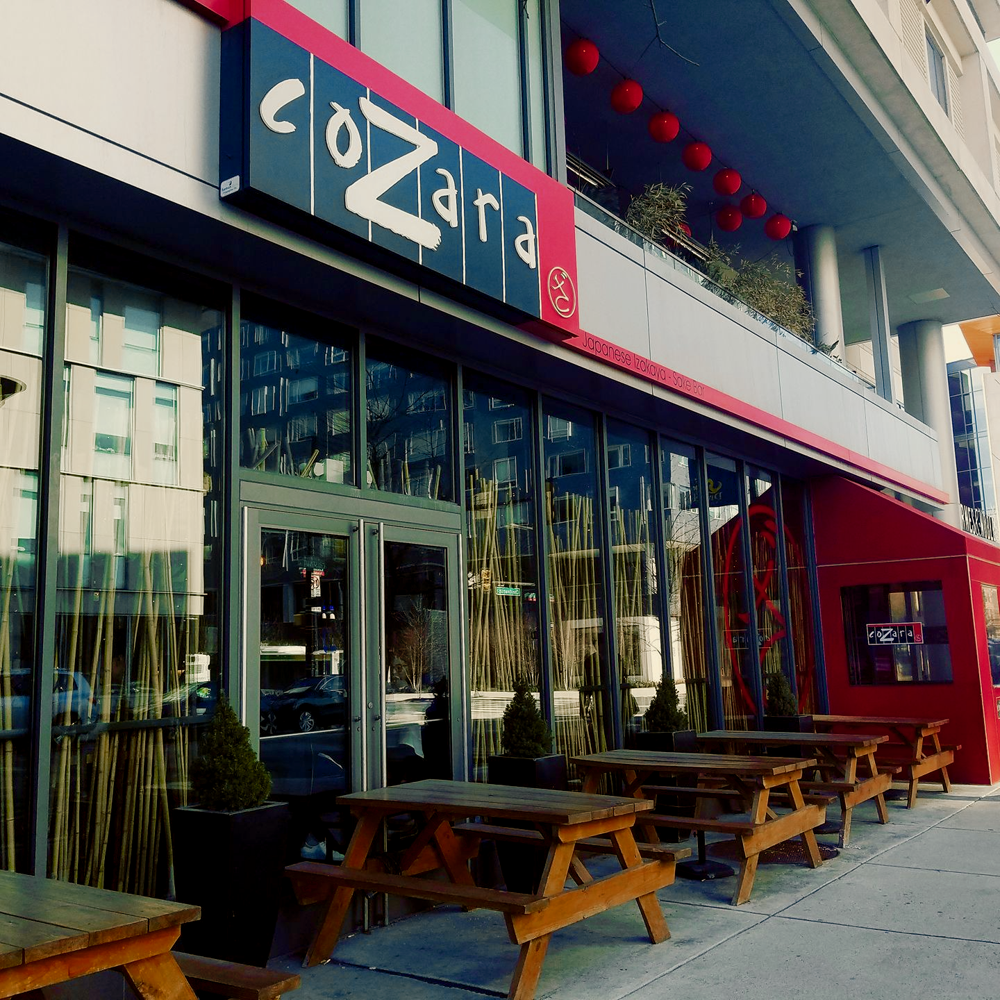
Visit Us
CoZara is conveniently located near UPenn and Drexel campuses in University City at 3200 Chestnut Street, Philadelphia, PA 19104.
We are open from 7:00 AM to 10:00 PM. We also host Happy Hour Monday through Friday from 4:00 PM to 7:00 PM.
Our small tapas-style plates make for great sharing among the table, so you can get a taste of our delicious cuisine.
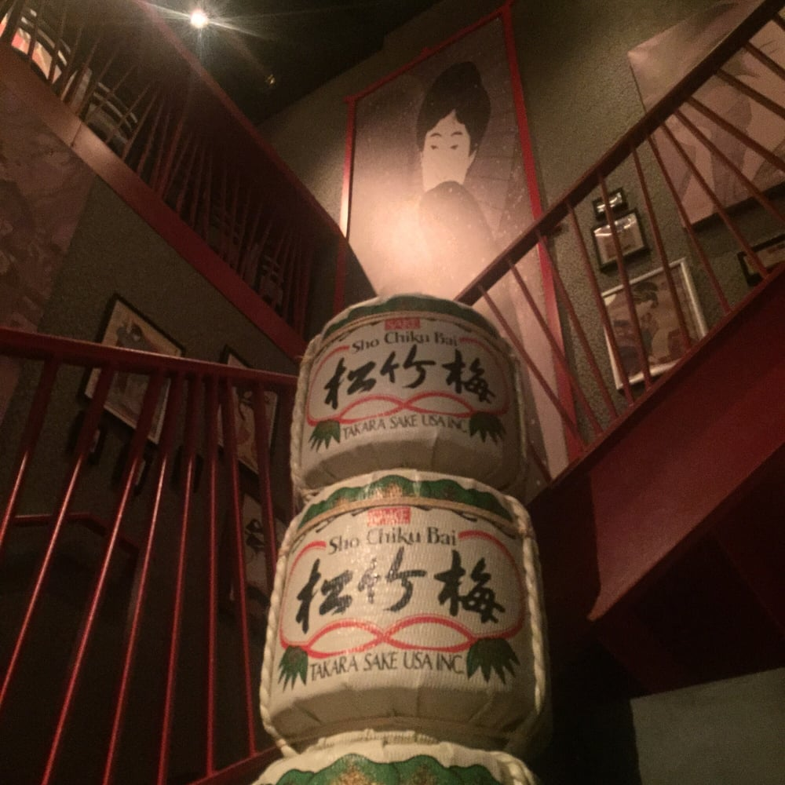
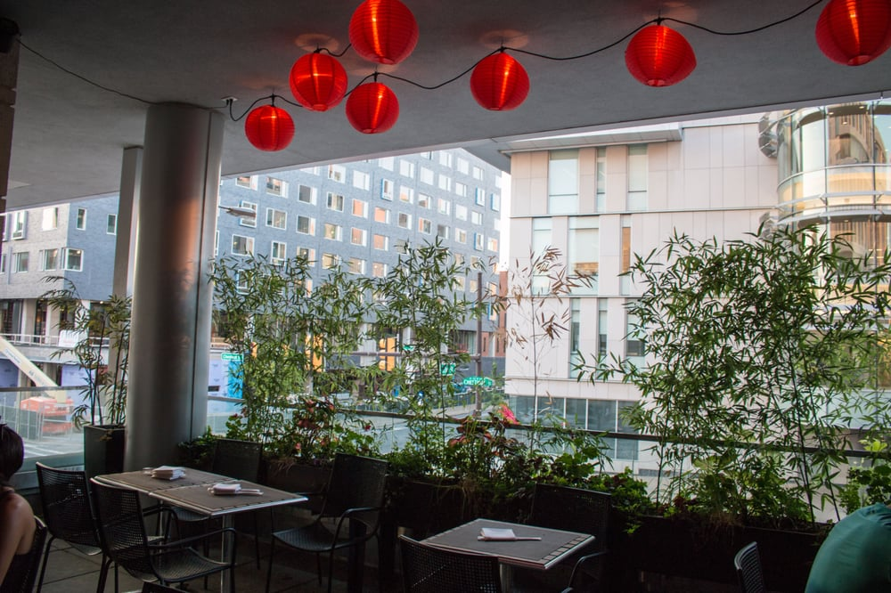
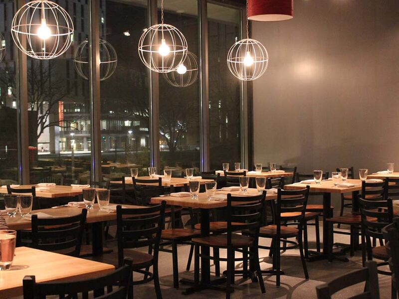
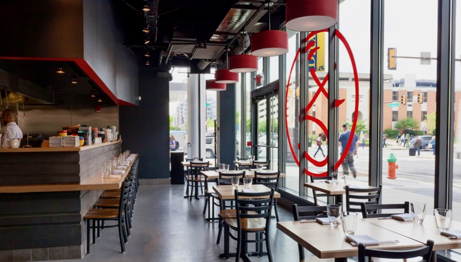